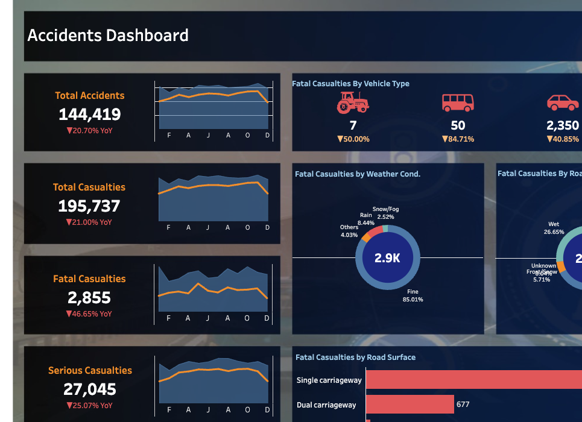
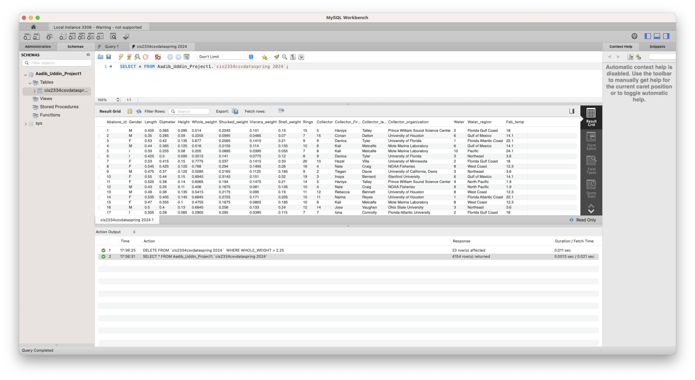

Hello I'm
Aadib Uddin
Data/Business Analyst


Hello I'm
Data/Business Analyst
Get To Know More

Data Analytics Intern
Global Experienced Specialists (GES)

B.Sc. Computer Information Systems
University of Houston
Hello there! My name is Aadib Uddin and I’m a Computer Information Systems graduate from the University of Houston who specializes in turning complex data into actionable business insights. Through my experience as a Data Analytics Intern at GES, I’ve worked with large datasets, built dashboards, and automated processes to improve accuracy and decision-making for stakeholders. I enjoy solving messy business problems with clean data, strong SQL, and clear visualizations. Currently seeking Full-Time Data Analyst or Business Analyst opportunities starting May 2026
Explore My
 PythonSQLPower BITableauMicrosoft ExcelHTML/CSS/JavaScriptNode.jsMicrosoft PowerPointMicrosoft WordMicrosoft Visio
PythonSQLPower BITableauMicrosoft ExcelHTML/CSS/JavaScriptNode.jsMicrosoft PowerPointMicrosoft WordMicrosoft VisioCertifications: Meta Data Analyst Professional, Azure Fundamentals (AZ-900)
Browse My Recent

Analyzed 600K+ accident records in Tableau, building a dynamic dashboard with parameters, calculated fields, and interactive filters to track KPIs and drill into trends across casualties, vehicle types, and road conditions.

Led the creation of a MySQL database system for an abalone diversity and biological statistics research study, importing large CSV datasets and writing SQL queries to extract research insights.

Built an Excel application to categorize, value, and analyze abalone data, applying complex categorization rules across 20+ biological characteristics and conducting statistical analysis to surface trends.
Get In Touch